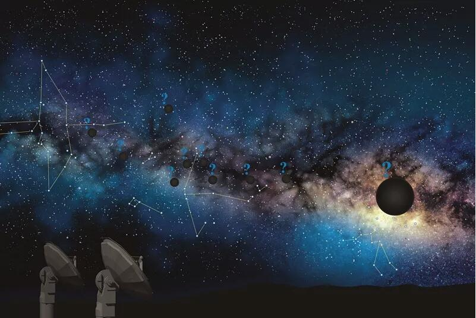
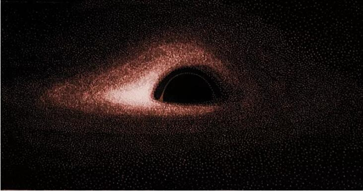
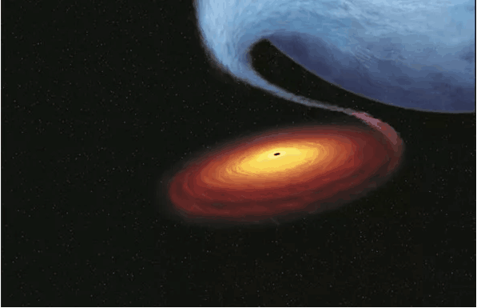

听说，由全球200多名科学家组成的研究团队，在过去2年的时间里通过世界各地的天文望远镜收集并整合了黑洞图像的数据，将于北京时间4月10日晚上九点整召开全球新闻发布会，公开人类天文史上的首张黑洞照片。
常听媒体提到“黑洞”。黑洞这个名称按照字面意思是“黑色洞窟”。大多数情况下，在谈到这种天体时都将它视为一种真实的存在。虽然根据理论和某些观测事实已经认定确实存在着这种天体，但是迄今为止并没有直接观测到过黑洞。那么，科学家凭什么会认为“确实存在着黑洞”呢？

世纪末被预言有可能存在的一种“隐藏的天体” 黑洞本来是理论所预言的一种天体。关于引力的两个理论——牛顿的万有引力定律和爱因斯坦的广义相对论——各自都通过推理得到了这样的“计算结果”。
先是18世纪末的科学家根据牛顿的万有引力定律设想过一种“连光也无法从那里脱逃的天体”。换句话说，他们设想的是一种绝不会向外释放光的天体。那其实就是最早的黑洞概念。
位于一个天体表面的物体，天体的密度（质量÷体积）越大，物体受到该天体的引力（在地球表面，这就是常说的“重力”）就越大。这就是说，天体的质量越大，体积越小，在它表面上的物体受到的引力就越大。发射火箭就利用了这个原理。位于一个天体表面的物体（例如火箭），只要速度足够大，它就能够克服引力脱离该天体，逃向宇宙空间。按照这样的思路，同样体积的天体如果质量非常大，或者同样质量的天体如果体积非常小，它的引力就会变得非常大，有可能大到即使具有光的速度也无法从该天体脱逃出去。
1916年，相对论也预言有“隐藏的天体” 后来，有科学家根据广义相对论的基本方程爱因斯坦方程进行计算，也作出了有可能存在着这种“隐藏的天体”的预言。爱因斯坦在1915～1916年完成的广义相对论是比牛顿的万有引力定律更加精确和正确的一种引力理论。
上述预言是德国的一位叫做卡尔•施瓦西（1873～1916）的数学家在求解爱因斯坦方程时得到的一个解。他所得到的这个解的物理意义如下：“当质量集中在一个非常小的区域时，时空弯曲会达到极限，变成一个连光也不可能逃逸出去的区域”。例如计算表明，如果挤压太阳使之发生坍缩，最终就会形成一个半径只有约3公里的连光也不可能逃逸出去的区域。
而且施瓦西的计算结果还表明，在光也不能逃逸的那个区域的中心有一个点，那里的引力和密度都为“无穷大”。密度为无穷大的状态，简直无法想象。事实上，在无穷大的点（奇点）上，所有的物理定律都不再成立。所以，当时的大多数科学家在相当一段时间都不认为宇宙中会存在着具有奇点和其他奇特性质的这种黑洞。

质量非常大的恒星最终会变为黑洞？
现在，不论天文学家还是物理学家都认为质量非常大的恒星最终会演变为黑洞。他们为什么会有这种看法呢？
关于恒星演化的理论认为，像太阳这样的恒星，依据质量的不同，到“晚年”有不同的命运，最终会演变为一颗白矮星或者一颗中子星等。白矮星是质量和太阳差不太多的恒星的归宿，不发光，体积只有地球大小，却集中了同太阳质量差不多的质量。1931年，有人从理论上证明，白矮星的质量有一个上限，不可能有质量更大的白矮星存在。到1939年，通过理论分析又得到一个结论：体积比白矮星小而质量更大的中子星的质量也有一个上限，质量超过这个上限的恒星最终会演变为一个黑洞。
发现了只能承认也许是黑洞的天体 20世纪60年代后期以后，陆续发现的一些天文观测事实似乎表明现实的宇宙中也许真的有黑洞存在。换句话说，发现了许多看似普通的恒星，然而却又难以把它们解释为是恒星的天体。
例如那些主要是发出强烈X射线的天体就是如此。X射线是肉眼看不见的一种光（电磁波），而科学家知道，高达数千万度的高温物体才会发出大量X射线。普通恒星不会有如此高的温度，因而很难认为那些发出强烈X射线的天体会是普通恒星。不是恒星又会是别的什么呢？于是只能认为它们是黑洞。
很可能是黑洞的一个典型例子是“天鹅座X-1”。用可见光观测，天鹅座X-1看起来像是一颗蓝色恒星。其实，天鹅座X-1是由一对天体所形成的一个双星系统，其中一个是蓝色恒星，另一个则是发出强X射线，用可见光看不见的天体。这个发出X射线的天体，通过推算，它的质量至少要达到太阳质量的9倍左右，这不仅超过了白矮星的质量上限，也超过了中子星的质量上限。
不仅如此，天鹅座X-1发出的X射线还在短时间里一会儿变强，一会儿变弱。根据X射线的这种强弱变化可以推算出发出射线的天体的大小的上限。推算结果是天鹅座X-1竟然非常小，大小不会超过数百公里。知道了天鹅座X-1是在一个非常小的区域集中了非常大的质量的天体，科学家才认定它多半是一个黑洞。
构建描述黑洞的模型 黑洞既然是连光也要吞噬的一种天体，它又如何能够发出强烈辐射呢？原来，这是黑洞周围的那些气体所发出的光。说明这种发光机制的黑洞模型是在黑洞的周围有一个“吸积盘”。

吸积盘是黑洞从附近的另一颗恒星（伴星）不断吸来气体而形成的一个围绕着黑洞作快速旋转的圆盘。在旋转过程中，吸积盘内的气体发生激烈摩擦，产生高温而向外发光。如果黑洞将吸引过来气体全都立即吞入，在它周围就不会积留下多少气体，因而不会发出太强的光。但是，如果形成一个围绕着它快速旋转的圆盘，吸引过来的气体就会积留起来达到很高的密度，从而发出强光。
本来是作为理论计算的一个结果的黑洞，正是通过以上分析才被看成有可能是现实存在的一种天体。那么，如此神秘的黑洞究竟长什么样子？会和电影《星际穿越》中的经典画面一样吗？今晚9点，让我们拭目以待。
本文节选自《科学世界》2012年第8期